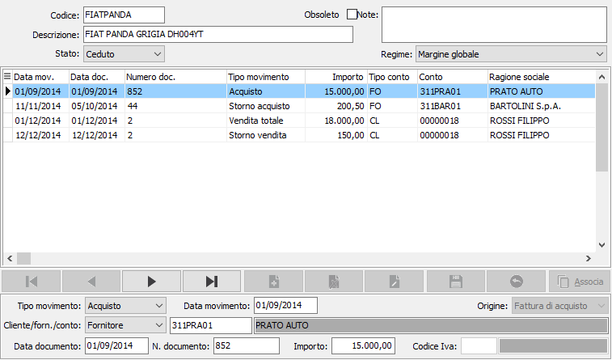
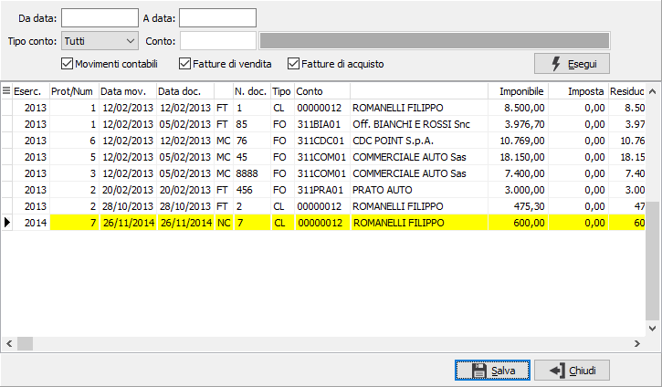

Gestione movimenti margine
Da questa funzione è possibile codificare nuove schede, visualizzare i movimenti assegnati alla scheda selezionata e inserire nuovi movimenti eventualmente associandoli a movimenti contabili oppure a documenti.
Nel campo “Regime” deve essere specificato il tipo di margine a cui la scheda si riferisce, se analitico o globale, il tipo regime della scheda può essere modificato solo se non risulta stampato nessun movimento sui registri del margine e se, sempre per nessun movimento, è stata effettuata la liquidazione Iva definitiva. Nel caso in cui sia configurato il margine analitico il campo può essere impostato solo a margine analitico.
Nel campo “Stato” viene visualizzato se il bene è in carico o se è ceduto, tale valore viene impostato a “In carico” al momento della creazione della scheda e a “Ceduto” al momento in cui viene registrata la vendita totale del bene.

Nella sezione centrale vengono visualizzati i movimenti associati alla scheda, mentre nella sezione in basso vengono visualizzati i dettagli del movimento su cui siamo posizionati. E’ possibile modificare o cancellare solo i movimenti non stampati in definitiva sul registro del margine o se per la data del movimento non è stata effettuata la liquidazione iva definitiva.
In questa gestione è possibile inserire i movimenti manualmente o associare movimenti contabili o documenti alla scheda; per fare questo è necessario entrare in modifica della scheda, inserire un nuovo rigo movimento e attivare l’associazione tramite il relativo pulsante.
In caso di cessione il “Tipo movimento” viene impostato a vendita totale, ma nel caso di scheda in regime di margine globale potrà essere modificato e impostato a vendita parziale; lo stato della scheda viene automaticamente impostato a ceduto se il tipo movimento è vendita totale.

Nella maschera di associazione movimenti/documenti è possibile associare alla scheda un movimento contabile, una fattura di vendita o una fattura di acquisto, spuntando le relative caselle. Nella selezione vengono visualizzate le fatture di vendita, di acquisto ed i movimenti Iva, ancora da assegnare, relativi ad aliquote Iva che prevedono la gestione del margine, oltre a questi vengono visualizzati anche i movimenti contabili relativi a causali che non movimentano l’Iva ma che generano una partita e che movimentano un conto di ricavo, di costo o un’immobilizzazione (“Tipo mastro” impostato a “Cespiti” sul mastro del conto). Questa funzionalità può essere utilizzata per associare i documenti relativi a fatture di vendita o di acquisto oppure per associare movimenti relativi ad acquisti da privati che non prevedono la gestione del movimento Iva ma per i quali viene inserito un solo movimento contabile con la rilevazione del costo.Se si trattasse di una scheda relativa al margine globale, potrebbe essere cumulativa di più beni e sarebbe possibile inserire più movimenti di acquisto e più movimenti di vendite parziali, ma di una sola vendita totale.